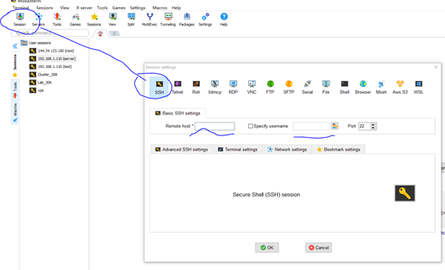
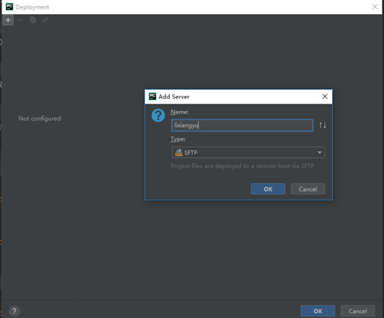
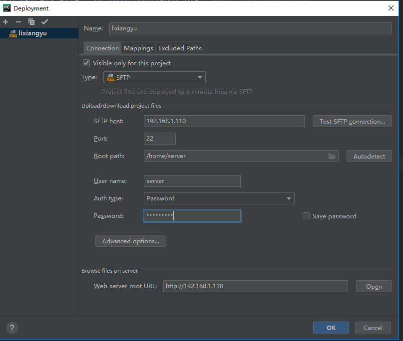
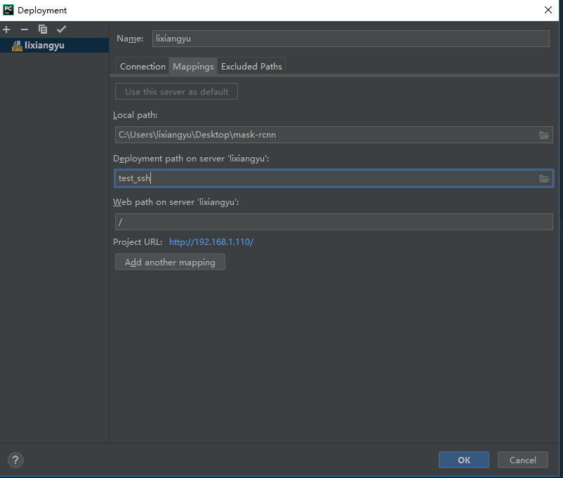
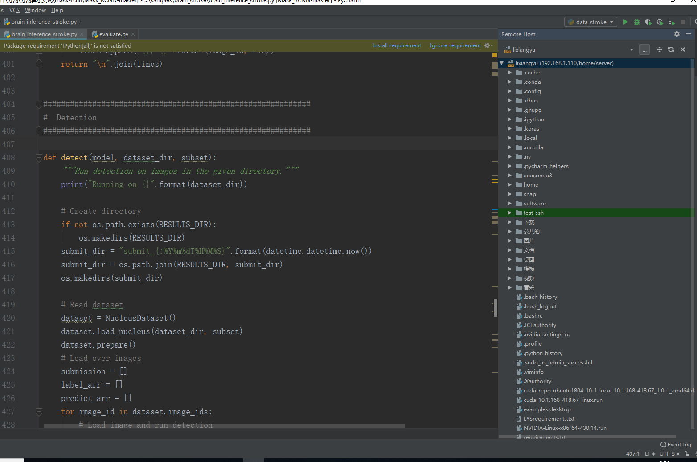
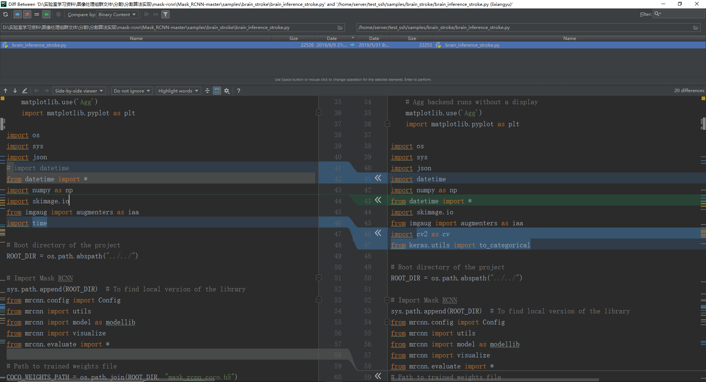
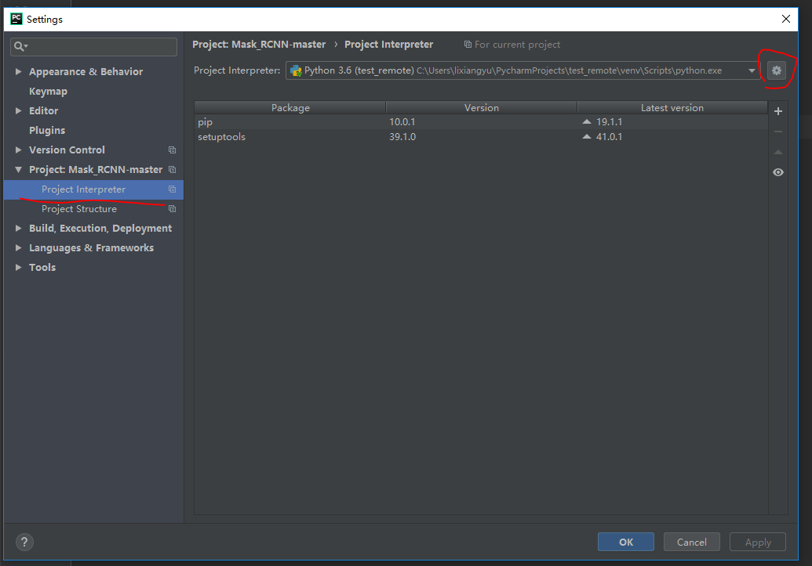
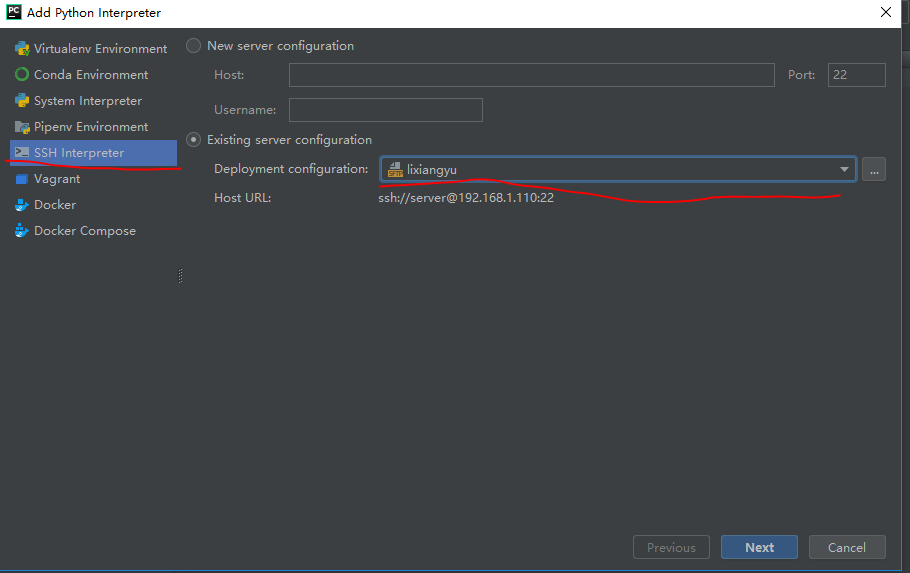
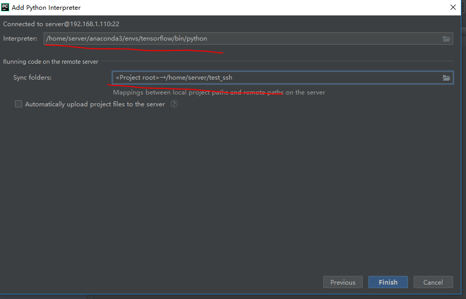
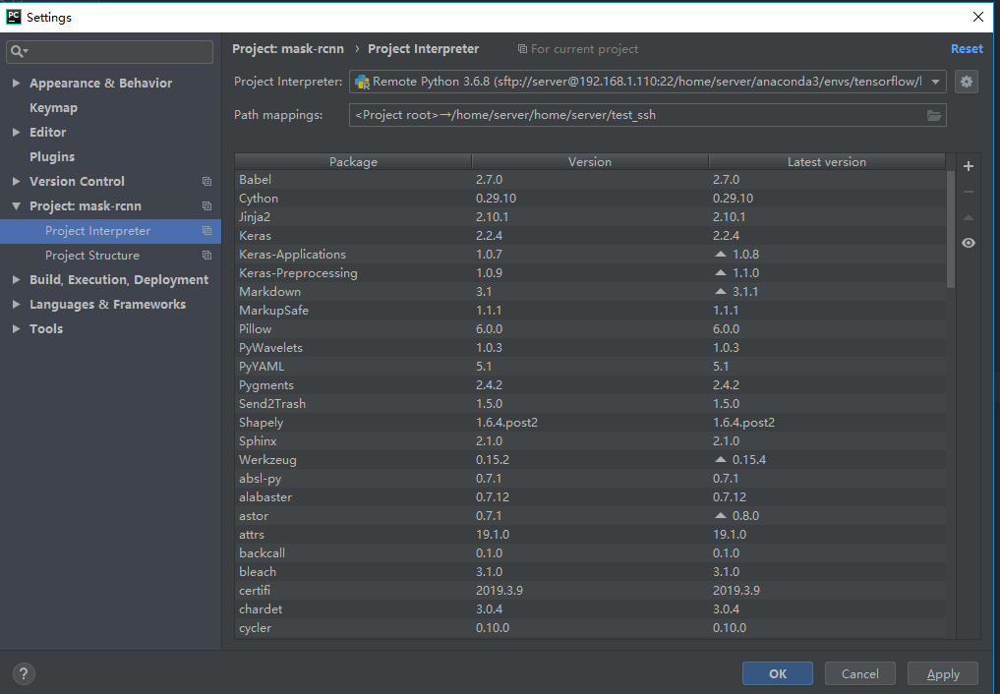

第2章 远程连接
2.1说明
虽然安装了ubuntu桌面版系统，但原则上普通用户只能通过ssh远程登陆使用，禁用Teamviewer等桌面远程软件。桌面系统一般情况下不使用，只是服务器出现问题时，管理员查看问题等使用，禁止安装桌面应用程序！
这个初衷一方面是为了更加有序的管理，能够使服务器稳定，高效的为大家提供服务；另外一方面，是利用这个机会，让大家对linux系统熟悉一些（毕竟是计算机专业，这个应该是基本功！）
服务器概况如下:
服务器双路志强银牌4114，4路2080ti，硬盘12T，内存128G -> IP: 192.168.1.195 端口：306
服务器双路志强金牌5218R，双路3090, 硬盘16T，内存128G -> IP: 192.168.1.196 端口：22
服务器双路志强银牌4210R, 8路3090, 硬盘16T，内存256G -> IP: 192.168.1.197 端口：22
通过联系管理员（***），创建属于每个人自己的用户账号，密码。
ssh登陆远程服务器方法很简单,假设 用户名：liming ：
默认登陆后的目录在/home/liming, 这一目录也是该用户的根目录。
2.2远程登陆服务器方法
Linux 系统登陆方法：
(1) 打开终端
(2) ssh liming@192.168.1.195 -p 306
(3) 接下来会提示输入登陆密码，输入密码即可登陆到服务器。
Window系统登陆方法：
Windows下需要shell类型的工具，推荐使用MobaXterm软件ssh远程登陆，如图所示，点击Session,建立一个对话，然后利用ssh工具进行远程连接，类似linux, 同样需要输入IP地址信息，用户名，端口默认即可！

2.3 文件传输
（1）对于linux系统，可以使用类似window这样的远程连接工具进行文件传输，当然最好是使用命令行的命令：
使用scp命令，从本地传输到服务器和从服务器传输到本地的用法基本一致，只需在scp命令中按照 scp [-r] source destination 的顺序书写即可。
以本地数据传输到服务器为例：
scp localeFile yourName@219.217.238.193:/yourServerHome
scp -r localeDirectory yourName@219.217.238.193:/yourServerHome
实在不行可在自己客户端下载 FileZilla
（2）对于window系统，MobaXterm软件可直接对文件进行拖拽操作，当然也可利用其中的命令行使用scp命令操作！
2.4 Pycharm远程调试
2.4.1 简介
Pycharm提供了一种很方便的远程调试功能，能够让我们在自己的机器上实现利用远程服务器的硬件资源进行代码调试。
前提条件：客户端安装pycharm 专业版（注1：社区版不行；注2：服务器端不需要安装pycharm!因此服务器不要安装pycharm等IDE！）
利用学生邮箱可免费使用。可上pycharm官网下载，然后网上有很多破解教程，此处给出试过的几个破解方法网站：
https://blog.csdn.net/re_psyche/article/details/86469595
https://blog.csdn.net/qq_32811489/article/details/78636049
本教程根据老版本编写，新版本有一些差异，但是配置思路相同。
2.4.2 远程服务器配置
首先我们需要配置PyCharm同服务器的代码同步，打开Tools | Deployment | Configuration，点击左边的“+”添加一个部署配置，输入名字，类型选SFTP。

选择ok之后填入配置信息：

其中：SFTP host: 服务器IP地址 192.168.1.195
root path: 是文件上传的根目录，注意这个目录必须用户名有权限创建文件, 是绝对路径,从系统根目录往下写; eg:对于用户liming而言,此处填写 /home/liming 才会到用户根目录下！
User name、password 不用多说，远程登陆账号密码
然后配置映射，local path是你的工程目录，就是需要将本地这个目录同步到服务器上面，我填写的是项目根目录。 Deploy path on server 这里填写相对于root path的目录（特别注意：相对目录！！！），下面那个web path不用管。

2.4.3 上传与下载文件/文件对照/同步
（1）上传与下载文件：
有几种方法可以实现本地和远程文件的同步，手动和当文件保存后自动触发。这里我选择了手动，因为自动触发比如影响性能，PyCharm会卡，建议手动。
手动上传方式很简单，选择需要同步的文件或文件夹，然后选择 Tools | Deployment | Upload to sftp(这个是刚刚配置的部署名称)
下载文件也是一样，选择 Tools | Deployment | Download from sftp
（2）文件对照：
有时候你并不确定远程和本地版本的完全一致，需要去比较看看。PyCharm提供了对比视图来为你解决这个问题。选择Tools | Deployment | Browse Remote Host，打开远程文件视图，在右侧窗口就能看到远程主机中的文件.

选择一个你想要对比的文件夹，点击右键->compare with Local，打开同步对比窗口，使用左右箭头来同步内容。
上面是服务器与本地对比，那么本地文件通服务器对比，就先在PyCharm里面选择文件或文件夹，然后右键->Deployment-> compare with deployed version即可。
（3）同步:
这简直是一个bug的功能，该功能能够迅速定位服务器端的文件/文件夹与本地文件夹中内容不一样的地方！
操作方式：tools ->Deployment-> sync with local 或者远程文件视图中右键->Deployment-> sync with local

2.4.4 远程调试
（1） 配置远程调试python解释器。
选择File | Settings，选择Project | Project Interpreter，然后在右边，点击那个小齿轮设置，如下图所示：

然后点击“add“: 如果之前配置过SFTP的话就直接选“Existing server configuration”，然后选择刚刚的模板名称就可以了，由于我上面配置过就直接选模板;

这里请特别注意看我的Python解释器是虚拟环境，使用conda建立的公共虚拟环境tensorflow,如果使用自己建立的虚拟环境，其python解释器路径应该在用户~/.conda/envs目录下！

至此，远程调试配置完毕！

（2） 开始调试
此时就可以利用设置断点进行程序调试而不会使自己的机器卡死！因为此时利用的是远程服务器的硬件资源！
2.5 VS Code远程调试
2.5.1 VS code 下载
VS Code下载地址Download
下载windows版User Installer 64/32bit或者对应的其他版本并安装
2.5.2 VS Code汉化
在第一次打开VS Code时，会在右下方弹出汉化并重启的提示，也可以在如图一所示的中，点击红圈，搜索“Chinese”，下载该扩展包，并重启软件。

2.5.3 VS Code的远程调试配置
（1）点击红圈部分在拓展商店中搜索Remote Development，并安装该扩展包。
（2）在界面上点击左下角绿框部分，在打开的搜索框中，连续选择图二所示上下两个图中的红圈，出现输入ssh命令连接服务器的输入框，输入ssh -p 306 username@192.168.1.195，回车后输入密码并登录。


（3）右下角出现Host added，点击connect，可以连接服务器，点击open config可以查看自己的连接配置参数，配置参数如图三所示。(该文件路径中，不要出现中文)

若想连接服务器可以通过点击左下角绿框->connect to host -> 192.168.1.195，输入密码可以登录，在第一次登录后，可以通过点击图四所示红圈，右击192.168.1.195后输入密码也可以登录
 （4）在新的窗口中打开，在资源管理器中，可以点击“打开文件夹”，显示服务器中该用户的目录，可以点击文件并打开，输入密码后进入新页面，在该页面的进行的改动，会自动同步到服务器，并且下面的调试栏，可以打开服务器的终端等。
（4）在新的窗口中打开，在资源管理器中，可以点击“打开文件夹”，显示服务器中该用户的目录，可以点击文件并打开，输入密码后进入新页面，在该页面的进行的改动，会自动同步到服务器，并且下面的调试栏，可以打开服务器的终端等。

（5）配置远程python环境，需要分别在本地和服务器端页面安装如图六所示拓展，注意页面上面的名字，区分是本地页面还是远程页面，然后安装完成后，随便在VS Code中打开一个本地的py文件，点击“打开文件”，选择并打开一个py文件即可自动激活该拓展，然后连接远程服务器后，左下角会显示服务器上的虚拟环境，如图八红圈所示，可以选择环境并运行。


2.5.4 免密钥登录服务器
（1）在本机PC端如图九所示，CMD输入ssh-keygen -t rsa，要求输入时（红圈位置），直接敲回车即可，生成公钥文件，将公钥文件上传到服务器命令为scp C:\Users\xxx.ssh\id_rsa.pub username@192.168.1.195:~/tmp.pub，具体目录请查看公钥生成过程中，所给出的公钥地址（绿圈部分），输入密码后，上传。

（2）在服务器终端运行touch ~/.ssh/authorized_keys命令（创建文件），若显示不存在，依次运行mkdir ~/.ssh和touch ~/.ssh/authorized_keys命令，创建公钥文件目录后使用cat ~/tmp.pub >> ~/.ssh/authorized_keys命令，将上传的公钥文件挪到该目录下，使用rm -f ~tmp.pub删除原目录，修改文件权限依次运行chmod 700 ~/.ssh/和chmod 600 ~/.ssh/authorized_keys。
（3）在VS Code中点击右下角绿框，如图十所示，点击绿圈内容，选择config文件，添加认证文件参数identityfile，值为认证文件在PC端的路径，即图九中的绿圈内容，保存并关闭。在VS Code中重新登录服务器时，无需输入密码。


VS Code上使用TensorBoard前提需要在服务器中的某个环境下能运行tensorboard
在VS Code上左下角，切换至一个带有tensorboard的环境（不能是公共环境，因为没有权限），然后在一个py文件中输入语句from tensorboardX import SummaryWriter，VS Code会自动识别，并有“启动 TensorBoard 会话“链接，点击后右下角弹出，需要安装tensorboard的拓展支持，点是，开始安装（时间较长）。安装完成后，即可启动tensorboard。